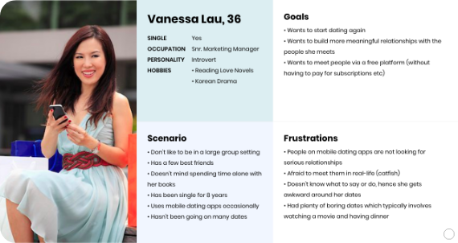
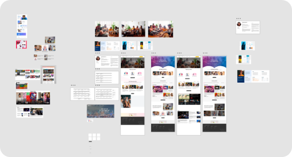
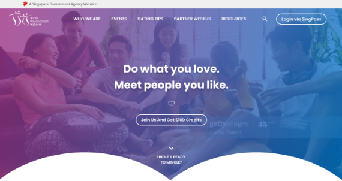
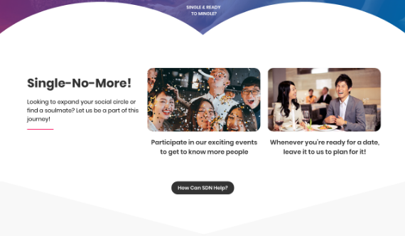
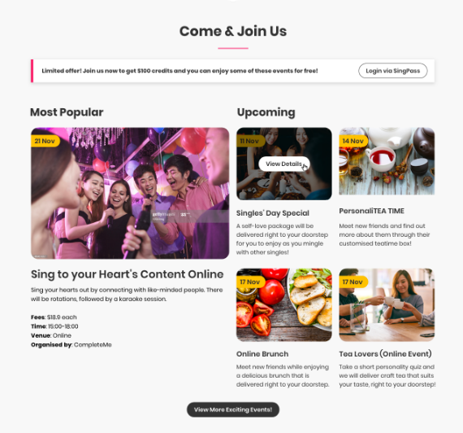
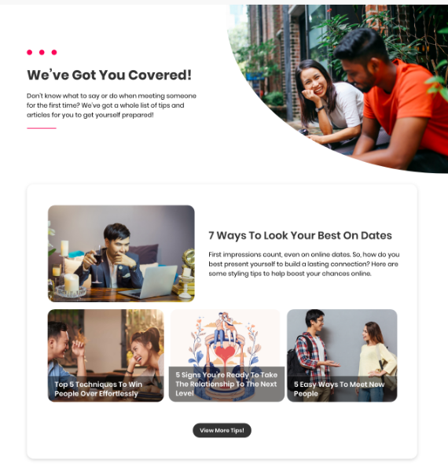

02
Conceptualisation
Who says Government sites can’t look good?There are plenty of ways to re-design them and still comply to DSS! Here’s my take on Social Development Network (SDN).

Who says Government sites can’t look good?There are plenty of ways to re-design them and still comply to DSS! Here’s my take on Social Development Network (SDN).
Social Development Network (SDN) is a division under Ministry of Social and Family Development (MSF). The main focus of this division is to lay the foundation for fostering healthy relationships among Singaporean singles by creating more opportunities to socialise with one another.
This is just a project that I decided to try my hands on and I have only re-designed just the homepage and not the inner pages. I’m not affiliated with this Government agency.
Based on desk research (and bothering all my single friends), here are some stigmas singles have when they hear about SDN:
Problem Statment
How might we attract Singaporean singles, regardless of age-range, to visit SDN in order to increase awareness of the goals of this division, encourage singles to participate in their dating events and explore the site?
Solution
Though marketing strategy plays a huge part in gaining traction to the site, the website should be refreshed with new design and functionalities in order to enrich visitors’ experience. One of the design trends in 2020 is to incorporate bold colours to give the impression of vibrancy and youthfulness.

Although I will only be showcasing the revamped landing page of SDN, I still did a super quick user journey of a to-be process and how I would envision a typical user, like Vanessa, would navigate through the site.


This is the moment where I would sketch out wireframes on my notepad as well as research on Pinterest to create a mood board on the visuals I want.

Once I’m done with ideation, this is where the fun happens! I created a few designs, but decided that I liked the look-and-feel and the flow of the selected design!
Most of the copy writing are written by me. Event titles and descriptions are taken from Spark Connection.

Having an “About Us” section right after the fold is necessary for SDN in particular. It may seem tacky and overused to some, but bear in mind that SDN is not as well-known as compared to Ministry of Manpower (MOM) or Ministry of Health (MOH).
For most visitors of SDN, it will be their first time here and these visitors will not be using the navigation menu straight away. They will act like “Dora the Explorer”!
Because SDN is about relationships and love, I added a little heart-shape backdrop to give some fun-element to the design.

With reference to my persona, Vanessa, and the stigmas pointed out earlier on, Singles are not very keen in paying for dating services or applications. Therefore, a call-to-action at this junction is important for visitors to know that they are entitled to a free $100 credits so as to encourage them to participate and “try out” events for free.
Think of your favourite mobile game. It lets you to start out for free and gives you time to see if you enjoyed it. If you do, you may not mind using some cash to purchase a few “game gems” to enhance your gaming experience.
My approach is pretty similar! It’s also important to showcase affordable events right at the start as displaying a $200 event would definitely be a turn-off at this point!

Lastly, SDN is not all about events. It also provides interesting dating content on how to prepare yourself for the real deal.
The tip to encourage click-through rates for these content is to make use to number in titles. A few studies have proven that readers do not real all the words, but rather they scan the text.
Numbers are like “Brain Candy” to readers. A single, small odd-numbered digit is like candy for our organisational minds. Interestingly, odd numbers are seen as more authentic than even numbers!

Re-designing the website is definitely not the only way to gain traction to the site. There are other factors such as ensuring that dating services provided by the agencies addresses the needs and concerns of our Singaporean singles - especially dealing with awkward silences!
Sure, there may be personalised services to match you with someone of similar interests, but hey, if you can’t carry on a conversation it’s not going to work out.
Though more research and surveying needs to be done, a friend of mine once told me that she would participate in these events if there are “facilitators” who could sit in together and help move things along when it gets awkward - kind of like a double date! I personally thought it was a brilliant idea.